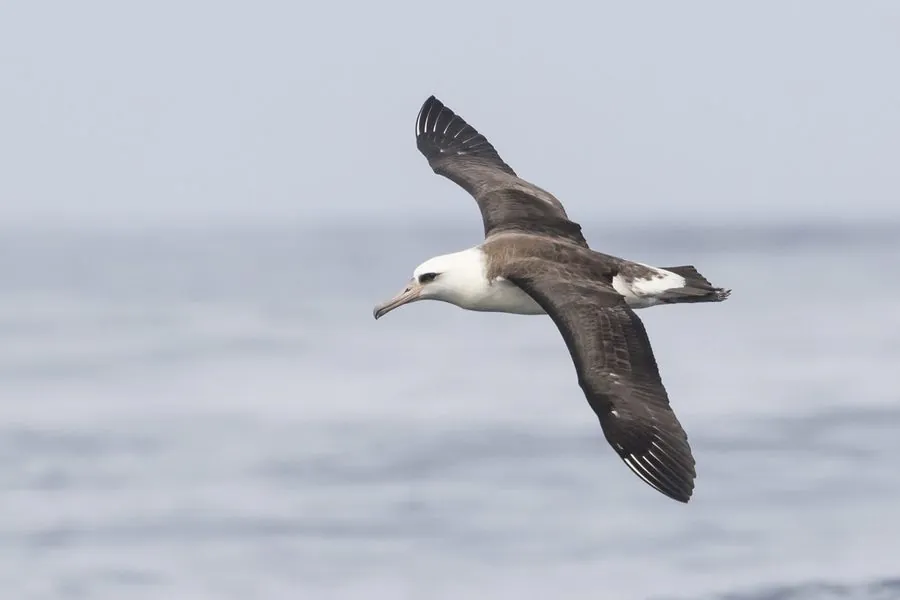

鸟类 · 动物界
黑背信天翁 Phoebastria immutabilis

北太平洋的大型海鸟，翼展近 2 米，背部深色、眼周黑色，一生大部分时间在海上翱翔，繁殖于夏威夷等岛屿。
- 分类
- 门脊索动物门纲鸟纲目鹱形目科信天翁科属北太平洋信天翁属
- 栖息环境
- 北太平洋开阔海域，繁殖于偏远海岛
- 地理分布
- 夏威夷西北部群岛、日本小笠原群岛和墨西哥瓜达卢佩岛等
- 保护级别
- IUCN 近危（NT）；非中国分布物种
物种志
黑背信天翁体长 79–81 厘米，翼展 190–200 厘米，体重 2.2–2.9 千克。它的背部、翅膀上面和尾部呈深褐色至黑色，头颈和腹部白色，眼周有一块深色斑，喙粉红色、尖端深色，看起来像画了黑色眼线。
黑背信天翁分布于北太平洋，繁殖于夏威夷西北部群岛、日本小笠原群岛和墨西哥瓜达卢佩岛等地，非繁殖期在广阔海域活动。它以乌贼、鱼类和鱼卵为食，常在水面取食，也会跟随渔船。信天翁实行一夫一妻制，每年产 1 枚卵，双亲轮流孵化约 65 天，雏鸟需 5–6 个月才能离巢。由于延绳钓误捕和海洋塑料污染，黑背信天翁被列为近危。
形态与习性
- 食性乌贼、鱼类与鱼卵
- 体长79–81 cm
- 翼展190–200 cm
- 体重2.2–2.9 kg
- 繁殖每年 1 枚卵，孵化约 65 天
- 寿命40 年以上
趣味知识
- 黑背信天翁翼展近 2 米，能连续数年在海上飞行。
- 它眼睛周围有深色斑，像画了黑色眼线。
- 延绳钓误捕和塑料污染威胁黑背信天翁的生存。